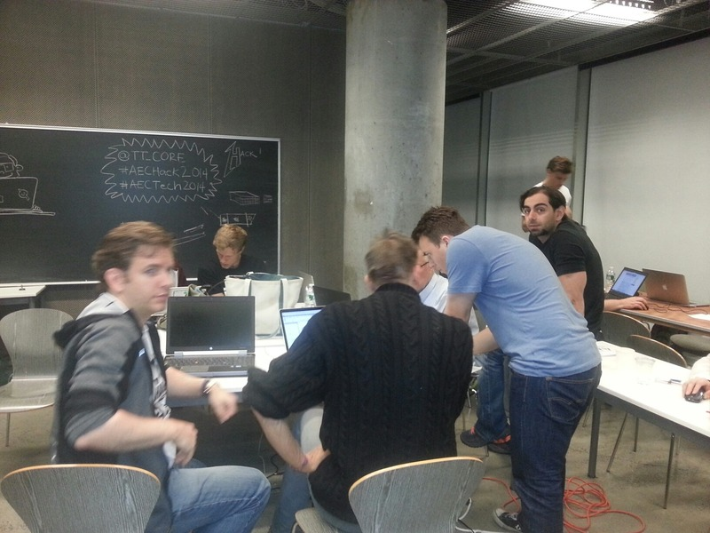

AEC Hackathon – From the Midst of the Fray
The New York AEC Symposium and Hackathon is nearing its conclusion.
The end and final result demos are scheduled for Sunday noon, coming up all too soon.
A bunch of us have been working non-stop through the night since Saturday morning.
It is now early Sunday morning, and coffee is eagerly awaited by all.
I am participating in a pretty big project to implement a general-purpose 3D AEC model viewer.
It is designed to consume models defined in three.js JSON scene format, and to produce suitable JSON models from a host of different sources, including Rhino, Grasshopper, 3dsmax and Revit.
We baptised ourselves va3c and grouped around our new GitHub organisation va3c – view 3D AEC building models in any web browser with three.js.
The va3c project landing page displays the main projects addressed:
- viewer – HTML viewer
- GHva3c – Grasshopper va3c exporter
- RvtVa3c – Revit va3c exporter
- 3DS Max – JSON Exporter Max Script
- Sketchup – Export to DAE Collada & View
- json – JSON sample files
- va3c – web viewer for AEC models
Take a spin with the va3c viewer demo for a quick and immediate impression of what we have achieved so far.

Here is a snapshot from the middle of Saturday night by Jim Quanci, adding: "Matt Mason from Imaginit Technologies and Jeremy working on their Revit JSON exporter to Three.js... working on an easy open source oriented way to view and share Revit models based on components like WebGL, Three.js and HTML5 via REST and JSON... learning how hard it is to implement the perfect web-based viewer for large AEC models... cutting edge technologists from several large firms..."